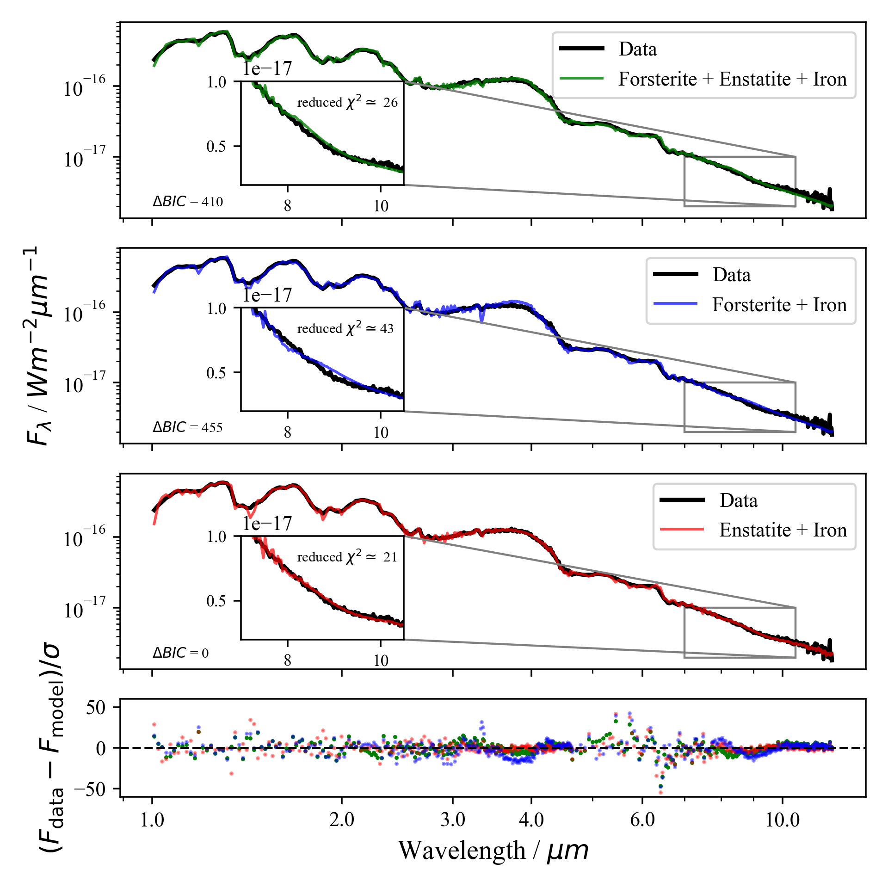

Sinking Silicates JWST Cycle 2 Program

My research focusses on L and T dwarfs observed with JWST’s NIRSpec and MIRI instruments as part of the Cycle 2 program called Sinking Silicates. The name comes from the fact that L dwarfs have cloudy photospheres containing silicates, which, as the objects cool and transition into T dwarfs, sink below the visible photosphere.
In this program, 13 brown dwarfs near the L–T transition were observed, all of which are in binary systems with well-characterised primary stars. Knowing the compositions of these primary stars is crucial, as it allows us to assume that the brown dwarfs share a common origin and bulk composition, enabling more accurate atmospheric characterisation.
The figure on the right (taken from the Sinking Silicates proposal) shows the targets' mass ratio with their primaries and their separation. These targets fall within the region typical for stellar companions, supporting the idea that the brown dwarfs and their primaries formed through the same processes.
Project Goals
During my PhD, I characterise the atmospheric properties of benchmark brown dwarfs near the L–T transition using low-resolution (R ~ 100) JWST NIRSpec and MIRI spectra. I investigate the composition and behavior of silicate clouds, particularly how they form, evolve, and sink below the photosphere as brown dwarfs cool. To achieve this, I use the second version of Brewster, a retrieval analysis code made specifically for brown dwarfs and gaseous giant planets.
My goal is to compare my observational results to theoretical models of cloud formation and sedimentation, to better understand substellar atmospheric processes. Figure below shows the fitted emission spectra of SDSSJ141659.78+500626.4, an L4 dwarf, using three different cloud models. The best one has enstatite and iron clouds, indicating that its magnesium-to-silicon (Mg/Si) ratio is between ~0.9 - 1.3. However, based on Gaia survey data, the primary has an Mg/Si ratio of 1.55, hence one would assume a forsterite cloud in this target's atmosphere. This result indicates that phase equilibrium models alone might be unable to fully capture the complexity of brown dwarf atmospheres, highlighting the need for more complex microphysical models.
